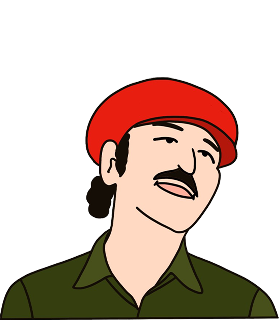
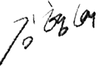

인사말
이사장
만화의 품격과 긍지를 보여주는 허브로

안녕하십니까?
한국만화영상진흥원 이사장 김형배입니다.
웹툰을 기반으로 하는 한국의 만화산업이 이미 1조 원 대를 훨씬 상회하는 규모로 성장하며, 세계적인 주목과 관심의 대상이 됐습니다. 한국 웹툰의 기세와 확산이 더욱 예견되는 시기에 한국만화영상진흥원의 역할이 그 어느 대보다 중요한 시점입니다.
한국만화영상진흥원으로 줌인해 만화계, 부천시, 중앙정부, 학계·문화계, 산업계 등과 조화로운 하모니를 이루며 뉴거버넌스의 모범사례로 역할을 할 수 있도록 만들어 나가겠습니다.
감사합니다.
원장
만화로 행복한 세상을 위해
한국 문화콘텐츠 산업의 중심에는 ‘만화’가 있습니다.
60-70년대 만화는 사회악으로까지 지목돼 검열과 탄압을 받았던 하위문화였지만, 현재 우리의 만화는 급변하는 미디어 환경과 진화하는 융복합콘텐츠 시대에서 끊임없이 변화와 혁신을 거듭하며 당당하게 글로벌 한류의 중심에 서 있습니다.
한국만화영상진흥원 또한, 우리 만화와 같이 변화와 혁신으로 더욱 성장하고 견고해지고자 합니다. 가장 낮은 자세로, 그러나 가장 큰 열정과 헌신으로 새롭게 태어나고자 합니다.
만화계에서는 사랑받는 조직으로, 부천시에서는 자랑스러운 조직으로, 대한민국에서는 한국 만화를 키우는 대표 조직으로 다시 태어나는 한국만화영상진흥원을 응원해주시고 지켜봐주시길 바랍니다.
감사합니다.